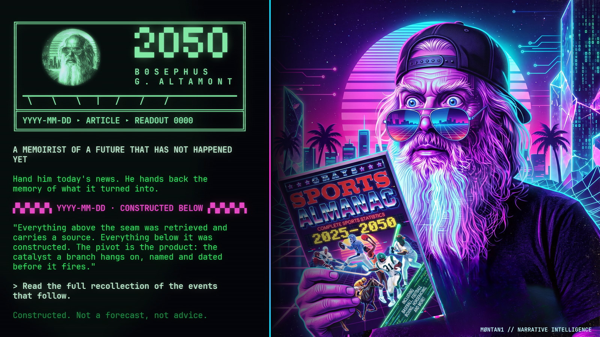
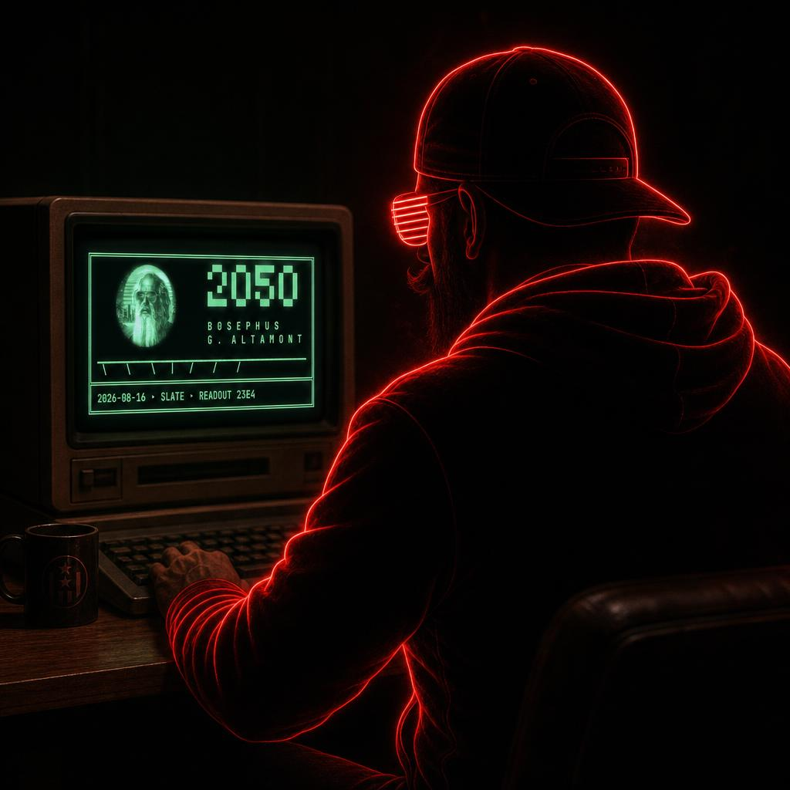

Bosephus 2050, the first engine
Not an agent. Not a bot. Not a report generator.
A Narrative Intelligence engine constructs a plausible narrative over a verified factual record, keeps a visible seam between the two halves, and leaves falsifiable markers behind so it can be graded later. That distinction is the whole product, and it is also the entire compliance posture. Call the thing an agent and a reader will take its output as a forecast, which is the one thing it must never be.
This is the piece worth stealing even if you build nothing else here. Between the cited half and the constructed half of every artifact sits a dated rule.
Everything above it was retrieved and carries a source. Everything below it was constructed and carries none, because there is nothing to source. The rule is mandatory, no cited claim may appear beneath it, and its absence is a failed artifact rather than a style lapse. Recall is implemented as retrieval, never as memory. The engine's past is accurate because it looks things up, not because a model remembers them.
Back to the Future has a photograph the hero carries in his pocket. His brother and sister fade out of it as the past changes around them, and fade back in once it is repaired. The picture is not a record. It is a live readout of a future still being decided. That is the model here, and it replaced a worse one.
An early draft held a Canon file: settled beats every run had to honour, so the constructed future stayed consistent across artifacts. That was a mistake. Canon made every artifact a hostage to every other artifact, and one beat contradicted by reality poisons everything downstream that honoured it.
It was replaced by the photograph. The world is re-instantiated at query time. Every run retrieves the real record as it stands on the day and constructs forward from that, and only that. A later recollection that differs from an earlier one is not an error to suppress. The negative has not fixed. People at the edges of the frame come and go depending on what happened last week, and the thing in the middle of the frame does not move.
What stays invariant is identity, not timeline. Continuity moves from consistency with itself to consistency with reality, checked by a ledger, which is the only kind that can be graded.

This engine explains itself in exactly one place, and it does it in character. Bosephus at forty-one, in West Virginia, in 2026, moves a tarp in the old boiler room behind the office and finds a machine that should not still power on. Nothing on it but solitaire, a word processor wanting a licence key, and one folder with a name he did not put there. It opens as garbage until he notices the garbage has structure. It does not want a viewer. It wants a terminal.
"He does not get everything right. I have asked him about outcomes and he has been wrong. Scores, numbers, who won a thing. What he does not miss is the turn. He tells me what a thing hinged on, before, with a date on it, and specific enough that I can go and watch for it myself."
Two things he will not discuss: the price of anything, and Bosephus's own life. Not because MØNTAN1 is not a registered adviser, though it is not. Because he is sixty-five and has something behind him he will not risk to win an argument with a younger man who already thinks he is right. Every guardrail here is that refusal wearing a different hat. It is also why the cards look the way they do: the green phosphor and the block-drawn masthead are a rendering of a real object in the story, not a style choice.
This is the one thing the engine is for. Everything else exists to make it trustworthy.
A pivot is the single catalyst a branch hangs on: named, dated, and specific enough that a reader could go and stand where it happens and watch it fire. It is graded binary, and that grade is the headline number: did the named catalyst occur, by its date?
Outcomes are the noisy surface. This engine gets them wrong routinely and says so. Anyone can post a score. Almost nobody publishes a dated catalyst in advance and then shows whether it fired. If a pivot cannot be graded, it is not a pivot, it is a mood, and the block gets rewritten.
pip install pillow python3 engine/render_card.py engine/cards/2026-08-16_clarity-act.card.json out.png
Needs a monospace face with half-block glyph coverage. JetBrains Mono Nerd Font is the reference. Many mono faces lack ▀ ▄ █ ▞ ▚ ▁ and render tofu.
Backtests validate the harness, not the forecaster. A constructor writing a 2015 branch already knows about the pandemic and the 2022 inflation shock, and no amount of good faith unknows it inside one session. Run 01 scored the machinery at 78.8 percent. Its 73.5 percent reality match measures how well something that knew the answer could write a plausible path to it, which is not a hit rate and is not published as one. Only forward markers validate the forecaster.